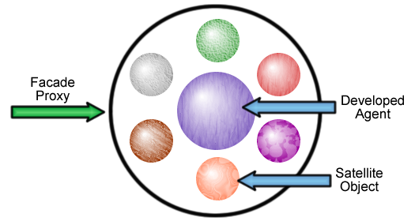

Neon makes great use of dynamic proxies in order to add system level functionality around an agent, and to enable collaboration between agents
By using dynamic proxies, Neon can intercept calls and send them to objects that are attached to your agent to handle infrastructure and management level tasks. This is called satellite interception. Objects are placed into the dynamic proxy when the agent is deployed, and although most methods will be routed to the agent that you have written, some methods will be intercepted and diverted to these satellite objects, which can then, if required, call methods on your agent.

Building a delegate
Delegates are formed from two pieces, the delegate, the invoker
The delegate is an interface that is registered inside the FacadeProxy, the invoker implements the delegate interface and has it's invokeDelegate method called. These two pieces are used in the proxy that the receiving agent is wrapped in. Delegates are generally called through the messaging API, rather than the agent interfaces unless the delegate matches the method being called, or your agent implements the delegate.
When the initial FacadeProxy is registered it will implement all the interfaces of your agent and the delegate interfaces, for all methods that are sent to the Proxy, any calls to methods that are registered in a delegate will result in redirecting the method call to the Invoker.
For the most part, it is better to think of delegates as ways of adding object behaviours into the agent that the infrastructure requires, rather than behaviours that other agents need to call.